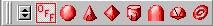
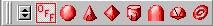
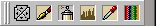
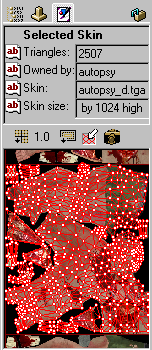
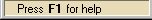
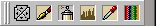
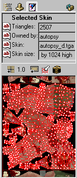
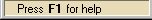

Overview
Updated 09 Jul 2012
- QuArK Information Base
- 1. Introduction to QuArK
- 1.6. Model-editor in QuArK
|
|
Overview
Updated 09 Jul 2012
|
Upper levels: - QuArK Information Base - 1. Introduction to QuArK - 1.6. Model-editor in QuArK |
|
1.6.1. Overview |
[ - - ] |
The Model-editor in QuArK is laid out and functions very much in the same way that the Map-editor in QuArK does for constancy in its use. |
|
Index |
|
Overview |
cdunde - 09 Jul 2012 | [ Top ] |
|
Move your mouse to highlight an area in the Model-editor, then mouse-click to go to a description of that area. (Graphic-example from QuArK v6.6.0 Beta4)
 

 





| |||||||||||||||||||||||
|
Selection & Navigation Methods |
cdunde - 13 Sep 2007 | [ Top ] |
|
Selection Methods : Different selection methods have been designed into the QuArK Model Editor for the editor itself. Also see the Skin-view page for its particular Selection & Navigation Methods. LMB Click on Component : A model can be made up of a single Component (part) or a whole lot of components, sometimes becoming very complicated. Such as a separate component for the head, upper torso, upper arm, elbow, lower arm.....and so on. So to make these different components easy to select and find in the editor's tree-view all you need to do is make a quick LMB Click on any component in one of the editors views and that component will become selected as well as its main folder in the tree-view. LMB Vertex Handle Drag : This method is available when your cursor is directly over a model components mesh vertex (point) drag handle and the cursor will change in appearance when it is. Holding down your LMB will allow you to drag that particular vertex to a new location in the view, changing the shape of the model mesh for that particular animation frame. A specific frame must be selected for this function to work. If not, a warning message will appear instructing you do to so. In which case you will need to click your LMB one time anywhere in the same view to release, or free up, the mouse's action and continue on with your work or make that frame selection in the editor's tree-view. LMB Rectangle Selector : This method is available when the cursor is not over a vertex. Holding down your LMB and moving your mouse will produce a Red Rectangle selector that you can drag across the view. This selector will allow you to make a multiple selection of a model components mesh vertex points at one time. These vertexes can then be passed on to the Skin-view or will be done so automatically if you have activated one of the options on that editor's view RMB menu (which you can obtain by clicking your RMB in that view) for Editor Vertex Options. These options are also available on the main Options menu. As the Model Editor is developed, this selection method will be used to move whole sections of the model's mesh by use of its selected triangle faces. To de-select any and all vertexes, simply do another small Rectangle drag in any unused area of any view. LMB & RMB Face Selector : The third method is a unique one in that by holding down your LMB and RMB together you can do a number of things: 1) If your cursor is over a model's mesh face it will select that particular face, outlining it in the Editor views selected faces outline color that you can change by using the Color Options button. 2) Continuing to hold your mouse buttons and dragging your cursor over the model's mesh will select additional faces. 3) Dragging over a face that has already be selected will de-select that face. 4) And doing a LMB & RMB drag in any unused area of any view will de-select any and all faces. Besides outlining the selected faces, as described above, it will also fill in those faces, for easier identification, if you have activated, checked, the View Options 'Mesh in Frames' item for any particular view. This selection method also works in conjunction with a view's RMB menu Editor Face Options and main Options menu. Navigation Methods : The QuArK Model Editor navigates much like it does in the Map Editor, except for one big difference for any of its 3D views as covered in detail below. 2D Views : Using your MMB you can Zoom in and out for any of the 2D and 3D views. Press and holding your RMB will allow you to Scroll or Pan in those same views. All other combinations are used as described above in the Selection Methods section. 3D Views : Besides what we just covered above, the 3D views have one more navigation item, the RMB. When your cursor is not over a vertex drag handle you can use this to Rotate the model with. This is also used in conjunction with the main Options menu item 3D Rotation Options which give you four selections to choose from, each one being distinct from the others as to how rotation will take place and its particular point of rotation. Experimenting with each one will soon get you acquainted to their use. |
|
Hintbox |
cdunde - 09 Jul 2012 | [ Top ] |
|
|
Copyright (c) 2009, GNU General Public License by The QuArK (Quake Army Knife) Community - http://quark.sourceforge.net/ |
[ - Top - ] |